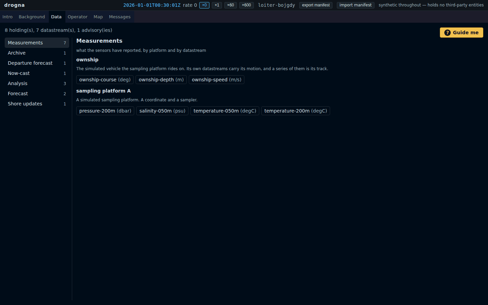

A forecast made from the truth is not a forecast
The background
This demonstration harness keeps three stores and serves them through three standard interfaces, and until last week only one of the three was browsable. The gridded fields had a tab. The sensor measurements had none. The advisories sent from shore had a store, a publisher and a working API, and had never been drawn anywhere at all.
The requirement
One tab over all of it, organised the way a reader asks rather than by which standard answers: measurements, the archive, the forecast issued at the quay-side, the now-cast, the analysis, the forecast runs, and what shore has sent. Every branch reading through the same wire the rest of the system uses, refreshing when its store announces and never on a timer.
The options considered
Six of the seven branches had data waiting. The quay-side forecast did not exist — nothing in the system had ever issued one. Adding it looked like an afternoon: the generator can evaluate the ocean at any instant, so evaluate it at sailing time and step forward.
That brief was right about the future. A forecast built from the truth is a perfect forecast, which is to say not a forecast at all. What it had to be instead was persistence: the ocean as it was at the moment of sailing, held constant, growing wrong on its own as the real thing moves away from it. Wrong in the way a real brief is wrong.
The demo

Open it at the departure forecast and pick the holding: its manifest names persistence as its derivation. Then compare it against the now-cast, which is the same ocean, still moving.